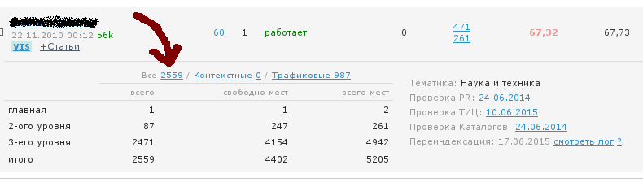
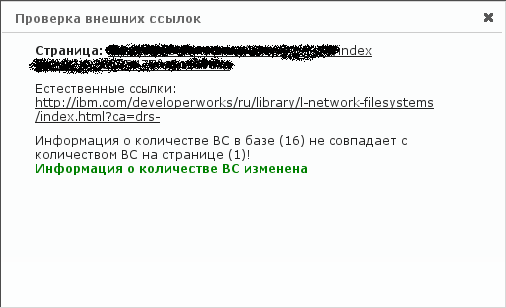

Переиндексация страниц
Переиндексация в SAPE возможна раз в 30 дней.
Для переиндексации нужно в разделе "Веб-Мастеру"->"Мои площадки" рядом с соответствующим сайтом нажать ссылку "Переиндексировать". Если переиндексация недоступна, то этой ссылки не будет, а вместо нее будет показана дата последней индексации. Вот так:
Переиндексация: 17.06.2015 смотреть лог ?
Внимание! Следует знать, что при переиндексации не будет обновлено количество внешних ссылок (ВС) на страницах сайта!
То есть, если вы провели работу по удалению лишних (не саповых) ссылок на сайте, и запустили переиндексацию, то в БД Сапы даже после переиндексации будет показываться прежнее количество внешних ссылок.
Пересчет количества внешних ссылок
Чтобы пересчитать колиество внешних ссылок, можно послупить двумя способами.
Способ 1. В разделе "Веб-Мастеру"->"Мои площадки" в информации о конкретном сайте нажать на число страниц:

В появившемся списке в столбце ВС нажать на число. Если число ссылок на странице не совпадает с числом в базе Сапы, будет выведено следующее сообщение:

Способ 2. Групповое обновление количества ВС. Точно так же, надо в разделе "Веб-Мастеру"->"Мои площадки" в информации о конкретном сайте нажать на число страниц. На открывшейся странице найти надпись:
Пересчет количества ВС для всех страниц сайта: 17.06.2015
При нажатии появится сообщение, что пересчет страниц поставлен в очередь на обработку. Ожидайте день, и количества внешних ссылок обновится на правильные значения.